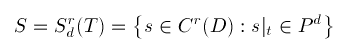
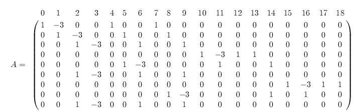

A spline is a smooth piecewise polynomial function. The splines of interest in these pages are defined on triangulations.
Let T be a triangulation and D the union of the triangles in T. We define

This is the space of all r times differentiable functions that on each triangle can be represented as a bivariate polynomial of degree d. P d is the (d+2)(d+1)/2 -dimensional space of bivariate polynomials of degree d
Let s be a spline in S. On each triangle t in T we express it in the Bernstein-Bézier form. Since we require that s be at least continuous we identify the control points along the edges shared by neighboring triangles, and collect the Bézier ordinates into a vector c. In the case of splines that are just continuous, i.e., r=0, we can assign an arbitrary value to each entry of c and thereby obtain all splines that are piecewise polynomial of degree d and globally continuous. A spline s in S that is r>0 times differentiable satisfies the homogeneous smoothness conditions
which are described here.
A is an m by n matrix where m equals the number of smoothness conditions and n equals the number of Bézier ordinates of a spline in S. The dimension of S equals n - rank (A).
Each Bézier ordinate corresponds to a domain point t . We therefore denote it by ct. We also denote the set of all domain points by P. A subset Q of P is a determining set if

If Q is no larger than any other determining set it is a minimal determining set. It follows from basic linear algebra that the number of points in any minimal determining set equals the dimension of S. The Bézier ordinates corresponding to the points in a minimal determining set can be chosen arbitrarily and then uniquely determine a spline s in S.
 We illustrate these concept with an example shown in
the Figure nearby. This triangulation is known as the
Clough-Tocher split. The vertices of the outer
triangles are labeled V1, V2
, and V3. The interior
point is
We illustrate these concept with an example shown in
the Figure nearby. This triangulation is known as the
Clough-Tocher split. The vertices of the outer
triangles are labeled V1, V2
, and V3. The interior
point is
V0 = (V1 + V2 + V 3 )/3
To compute the smoothness conditions across edge V 0 V2, for example, we need to express V1 in terms of barycentric coordinates with respect to the triangle V0 V2 V3:
V1 = 3V0 - V2 - V 3.
Proceeding as indicated here we obtain the matrix

where for convenience the columns have been labeled with the indices of the domain points.
In this example, r=1 and d=3. There are three interior edges, each giving rise to three C 1 conditions, for a total of 9 equations. The total number of domain points is 19. (The labeling starts with 0 because that's how Java thinks about them.) The rank of the matrix is 7 and the dimension of S is 12.
It turns out that the points marked with green and red plus signs form a minimal determining set. Thus the following Bézier ordinates (indicated with plus signs in the Figure) may be set arbitrarily:
c0, c2, c4, c6, c7, c9, c10, c12, c13, c15, c17, c18.
Click here to see how the minimal determining set has been found.
Larry Schumaker showed that for all d >= r >= 1
 (*)
(*)
where

The summation for sigma runs over all interior vertices v ev is the number of slopes assumed by the edges emanating from v. The term sigma captures an essential property of multivariate spline spaces: the dimension depends not just on the combinatorics of the triangulation, but also its geometry, i.e., the precise relative location of the vertices.
As shown by Schumaker and Ibrahim, and Hong, the lower bound (*) gives the true dimension if
d >3r+1.